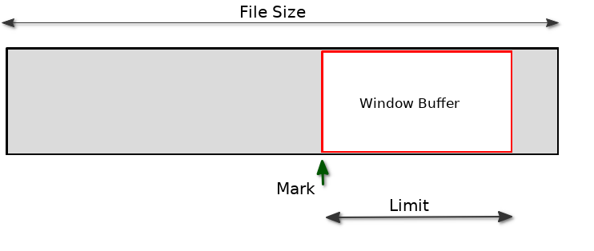

Simple Random
Access
The original Basic! for Android language provides a way
for random access inside a file.
To set the position for the next read use;
byte.position.set <file_index_nexp>,
<position_nexp> (legacy v01.91 manual
page 114)
This command alone allows direct positioning anywhere
within a file.
Internally, there is a window buffer that covers the
whole file.
If you are NOT dealing with very large files, you can
use this command alone and not have any problems.
If you are NOT using random access at all, then you
won't have any problems with large files.
After a read, the next_read position will move
forward.
To get the current read position at any time, use;
byte.position.get
<file_index_nexp>,
<position_nvar>
(legacy v01.91 manual page 114)
|
Mark and
Limit
There is also another command that let's you define the
internal window buffer position and size when using
byte.position.set.
byte.position.mark
{{<file_index_nexp>}{,
<limit_nexp>}}
(legacy v01.91 manual page 115)
You would only ever need to use this command If a file
is too large for byte.position.set (e.g
500mb).
If the file is too large, you may get an out-of-memory
error.
The command sets the Mark and Limit of the window
meaning you can make the window buffer smaller and move
it's position.

The Mark is the
Start of the random access window within the file.
You may view it like an anchor of a ship.
The Mark and Limit are both set by the command
byte.position.mark
{file_index_nexp},{Limit_nexp}
When you execute this command, the Mark is always
dropped at the current position (the next
read).
Therefore you may need to byte.position.set
before dropping the Mark.
When a file is opened the Mark is by default at
position 1.
The Limit is the
size or width of the random access window.
By default the Limit is the whole size of the file.
If the file is too large (e.g 500mb) and you attempt
random access (byte.position.set) then this will
trigger an out-of-memory error. In this case you can
reduce the size of the Limit with the above
command.
If you reduce the Limit, this means that you may not be
able to get to some parts of the file that are not
covered by the window.
But you can move the window by moving the Mark. Don't
forget that the Mark can only be dropped at the
current
position.
byte.position.mark
fv, bsize
% first shrink the window buffer to prevent
OOM
byte.position.set
fv, pos
% set read
position
byte.position.mark
fv,bsize
% move mark to read
position
|
The
Rules
There are some hard rules when using byte.position.set.
1. You cannot set a position to less than 1.
Doing so will run-time-error.
2. You cannot set a position before the current
Mark.
Doing so will have unpredictable
results to the position.
3. You can set
a position after the Limit (outside the window)
But this is not recommended unless
you are also moving the Mark afterwards.
If you try to read data outside the
window, this will force the Mark to move to the end of
the read, for each read,
so you will never
be able to set position backwards from the last
read.
If you never have to access data
before your current position, then this can be
acceptable.
4. You can set the position at EOF just after
the last byte (filesize+1).
5. You cannot set a position after EOF, doing
so sets the position to EOF.
Note that because of rule 2, the window is only able
to move forward. The only way to place the
window earlier than it's current position is by closing
and re-opening the file.
|
4 ways to
random access files and big files.
Here are four functions that can random access large
files.
Function 1 is what you would normally use for average
sized files.
You can access anywhere in the file, forwards or
backwards.
If the file is several hundred megabytes in size, it
may crash with OOM (out-of-memory).
Function 2 shrinks the window to avoid OOM but
uses read positions outside of the window, so it can
only read forwards.
Function 3 shrinks the window and also moves it to the
target position.
It allows safe access anywhere from the target to the
end of the window forwards or backwards.
If you set a position higher than limit (outside the
window), it's behaviour is Rule 3.
Function 4 is the same as Function 3 but places
the window so that the target is in the middle of the
window.
This allows backward access before the target by half
a window.
%
Function
1
fn.def OpenBytePos1 (fpath$, pos,
bsize)
% open file at pos for next
read
% random access for whole
window/file
% OOM if file too big (e.g
500MB)
% -1=fail else return file
index
byte.open r, fv, fpath$
if fv = -1 then fn.rtn -1
byte.position.set fv, pos
% direct
positioning
fn.rtn
fv
fn.end
|
%
Function 2
fn.def OpenBytePos2 (fpath$, pos,
bsize)
% open binary file at pos for next
read
% maybe outside the read
window
% mark will follow
read
% forward access
only
% -1=fail else
return
file
index
byte.open r, fv, fpath$
if fv = -1 then fn.rtn -1
byte.position.mark fv, bsize
% shrink the
buffer
byte.position.get fv,g : ?"mark at
";int$(g)
byte.position.set fv, pos
% set read
position
byte.position.get fv,g : ?"ptr at
";int$(g)
? "mark will follow read"
fn.rtn
fv
fn.end
|
%
Function 3
fn.def OpenBytePos3 (fpath$, pos,
bsize)
% open binary file at pos for next
read
% read window starts at
pos
% random access within
window
% -1=fail else
return
file index
byte.open r, fv, fpath$
if fv = -1 then fn.rtn -1
byte.position.mark fv, bsize
% first shrink the
buffer
byte.position.set fv, pos
% set read
position
byte.position.mark fv,bsize
% move mark to it
byte.position.get fv,g : ?"mark at
";int$(g)
byte.position.get fv,g : ?"ptr at
";int$(g)
fn.rtn
fv
fn.end
|
% Function 4
fn.def OpenBytePos4 (fpath$, pos,
bsize)
% open binary file at pos for next
read
% put pos in the middle of a
read window
% random access within the
window
% -1=fail else
return
file
index
byte.open r, fv, fpath$
if fv = -1 then fn.rtn -1
byte.position.mark fv,
bsize
% shrink
the buffer
byte.position.set fv, pos-bsize/2
% mark
before
byte.position.mark fv,bsize
% by
half a buffer
byte.position.get fv,g : ?"mark at
";int$(g)
% target must be
within limit
byte.position.set fv, pos
% set it halfway
byte.position.get fv,g : ?"ptr at
";int$(g)
fn.rtn
fv
fn.end
|
-End
|